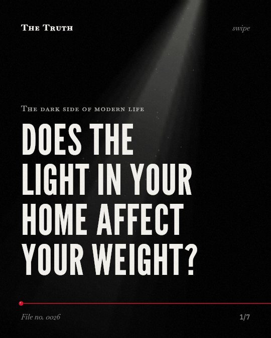
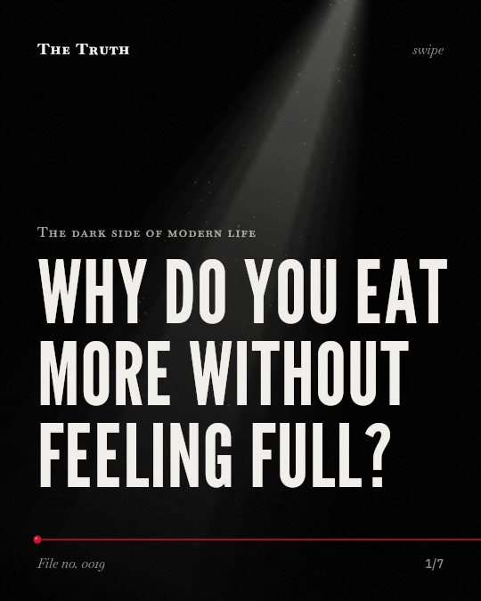

Skip to the text
The Truth
Library
Briefing
Method
Subject
Health and environment
No. 0060
Health and environment
What is circulating in your blood right now?
No. 0046
Health and environment
Is sitting always the enemy of your health?
No. 0037
Health and environment
How much nature do you actually need?

No. 0026
Health and environment
Does the light in your home affect your weight?

No. 0019
Health and environment
Why do you eat more without feeling full?
No. 0005
Health and environment
Do you really need 10,000 steps?